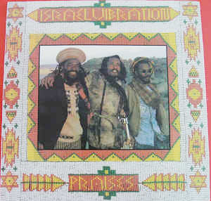

LP
Praises
Israel Vibration
Media: — · Sleeve: —
—
Personal
Discogs SuggestedCA$225.52
Discogs MedianCA$225.52
Discogs HighCA$225.52
- Physical Copy ID
- BB-LP-152
- Year
- 1990
- Label
- Real Authentic Sound
- Catalog #
- RAS 3054
- Country
- Jamaica
- Genre / Style
- Reggae · Roots Reggae